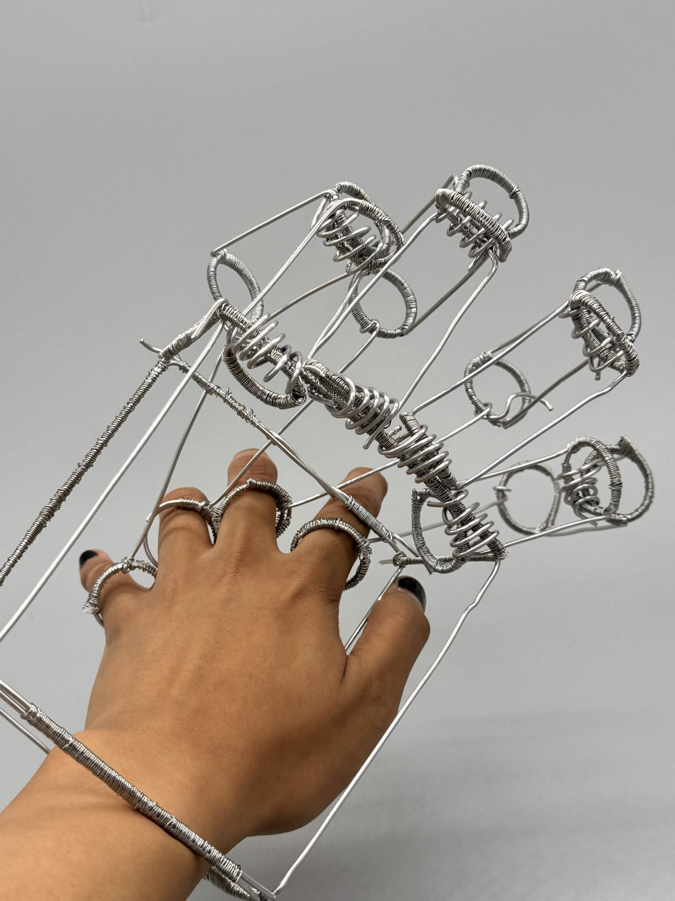
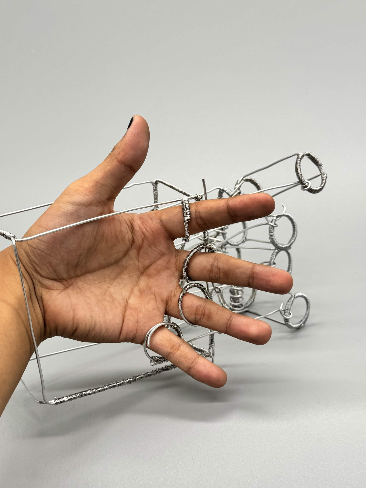
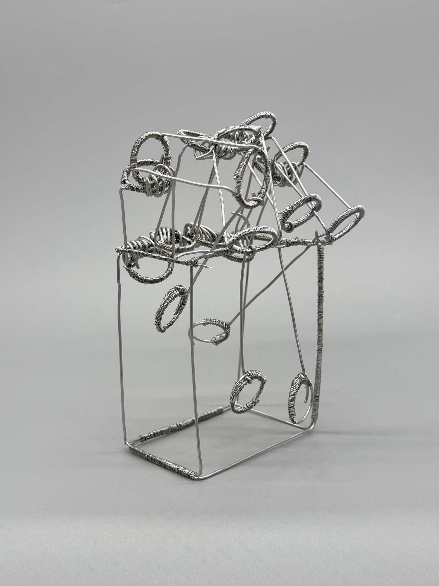

multimedia artist :]
Extension of Self



3” x 4” x 8”
16 Gauge Aluminum Wire, 26 Gauge Steel Wire
This piece is meant to be a reflection on the idea of art being an extension of the artist in both concept and physical form.
It is worn over and controlled by the hand in order to give the wearer the most control over the piece and its kinetic function.
I was loosely inspired by Deina Paige Fischer’s sculpture work in how she uses the various mediums to create a sort of replica
of human anatomy like limbs and facial features.